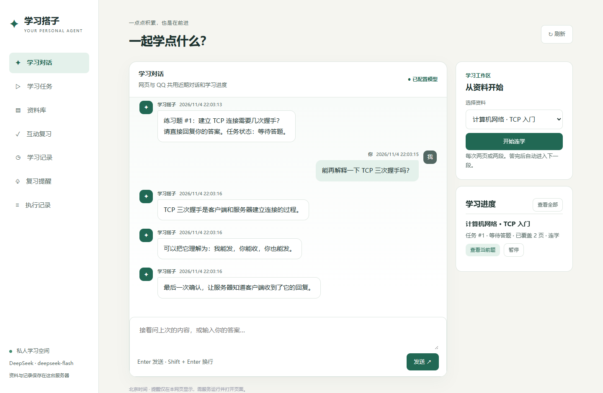

为什么做
想把自己的 PDF/Word/Markdown 资料变成可逐步学习的任务，而不是一次性聊天。
Personal Learning Agent · v0.4.0
把自己的讲义或笔记变成一小轮学习练习。v0.4.0 加入邀请登录，让每位用户分别保存自己的资料、聊天和学习进度。

下面用一道列表索引题，演示「读资料、讲解、答题、继续」的学习过程。
items = ["春", "夏", "秋", "冬"]问：items[1] 的结果是什么？
对。下标 1 指向第二个元素「夏」。 答完可以说「继续」，进度留在任务里。
想把自己的 PDF/Word/Markdown 资料变成可逐步学习的任务，而不是一次性聊天。
邀请试用准备中。已接入本机学习空间，尚未部署公网，暂无公网试用链接，ICP备案仍在处理中。
目前可先查看下面的版本进展；希望在自己的设备上运行时，请按 最新版 README 配置。
项目验收记录显示，v0.4.0 本地 51 项测试通过，验收 1–6 通过。测试使用临时数据库和模拟模型调用。
手机完整流程与真实 HTTPS 待验证；第 5 项并发验收目前覆盖进程内重叠请求，两台浏览器同时操作仍待实测。
以上说明根据 v0.4.0 的 README 与 PR #1 合入记录整理。51 项测试与验收结果引用项目记录，本次展示页更新未重新执行学习搭子后端测试。保留的界面截图来自 v0.2.0，使用演示资料与模拟模型回复。